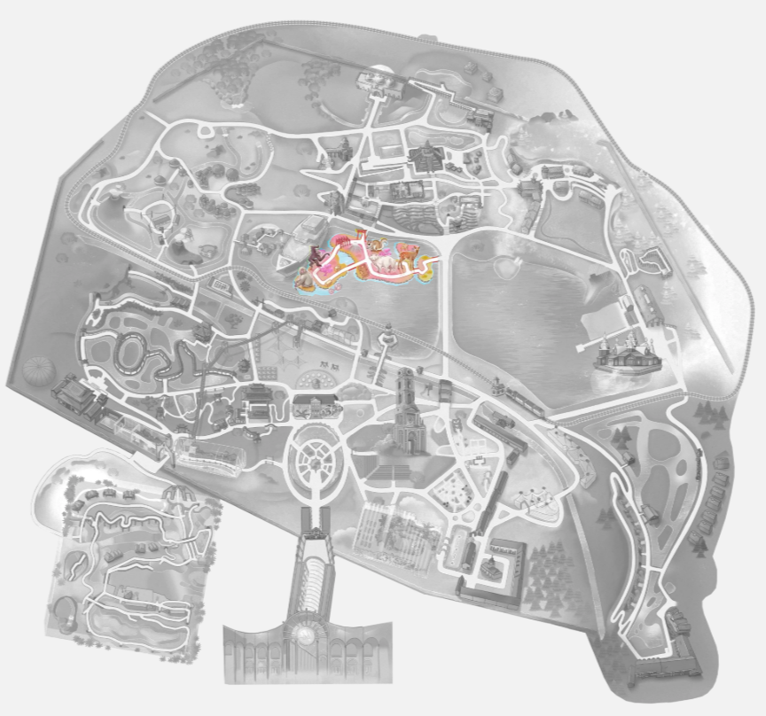

Les îles du soleil levant

Ce monde est un hommage à la culture et à la nature japonaises. On pénètre dans un univers qui met en avant la spiritualité, l'architecture traditionnelle et la sérénité des jardins insulaires. Ce monde est divisé en 4, comme les 4 îles principales du Japon.
L'architecture du monde
Le Torii
Le Torri est un arche rouge éclatant (sensé protéger des mauvais esprits), portail traditionnel japonais. Il se compose de deux montants verticaux et deux poutres horizontales. Il marque l'entrée d'un sanctuaire shintoïste. Traverser un torii est un acte de purification: il symbolise la frontière sacrée entre le monde profane et le monde spirituel. Il est de coutume de s'incliner légèrement avant de le franchir.
Honshu et le mont Fuji
Plus grande et plus centrale des îles japonaises, Honshu abrite les grandes villes de Tokyo, Osaka et Kyoto. A Pairi Daiza, elle se dévoile à travers une évocation du Mont Fuji.
Cette zone abrite les cerfs sika et les chiens viverrins.
Jardin de thé
Dans ce jardin on peut découvrir un Suikinkutsu, une installation acoustique produisant des sons mélodieux. Dissimulée sous un bassin en pierre dans un jardin de thé, une poterie enterrée transforme de simples gouttes d'eau en une mélodie cristalline apaisante. Le suikinkutsu (littéralement « caverne du koto d'eau ») fonctionne comme une caisse de résonance. Un pot en terre cuite est enfoui à l'envers, avec un petit trou à sa base. L'eau provenant du bassin percole à travers ce trou et tombe en gouttes sur la surface de l'eau contenue à l'intérieur du pot. Chaque goutte produit un son délicat qui résonne dans la cavité, créant une note pure et mélodieuse qui rappelle le koto, un instrument de musique traditionnel japonais.
Le jardin sec
Il est conçu dans le style zen traditionnel, avec des vagues de gravier ratissé et des pierres disposées avec soin pour la méditation, le tout entouré d'éléments végétaux authentiques tels que des bonsaïs, des ginkgos bilobas et des érables japonais.
Jizo
Ces petits statues avec un tissu rouge sont des divinités bienveillantes, qui veillent sur les enfants, les voyageurs et les âmes perdues. On les trouve un peu partout au Japon: routes, temples, cimetières. Les gens ont l'habitude de leur faire des ofrandes. Les fidèles habillent les statues de Jizô avec ces bavoirs, foulards et bonnets pour le remercier d'avoir protégé leurs enfants ou pour lui demander de veiller sur une âme.
Kintsugi
En face des Jizo, le sol est constitué de dalles roses devant 2 pierres roses. Les dalles ressemblent à des morceaux de poterie brisés, evc une traînée dorée. C'est une évocation de l'art du Kintsugi: réparer une poterie brisée avec de la laque et de la poudre d’or, et faire de chaque cicatrice ou imperfection un élément de beauté.
Hokkaido
Cette île est connue pour ses forêts et ses sources chaudes. Cette zone contient des mosaïques d'estampes japonaises.
Bain de pieds
C'est une source chaude artificielle où on peut tremper ses pieds.
Rochers mariés Meoto Iwa
Près de la source chaude, dans le lac, on voit une évocation des Meoto Iwa, qui signifie "rochers mariés". Ce sont 2 rochers sacrés situés en mer. Ils sont reliés par une corde sacrée. Cela symbolise l'union des 2 divinités shintoïstes, d'où le mariage et la fidélité conjugale.
Elle abrite les singes Siamang et les grues.
Kyushu
L'entrée de cette zone est gardée par deux statues Nio, divinités protectrices qui accueillent les visiteurs.
À gauche de cette entrée, des palmiers surplombent une grotte et un miroir, évoquant la légende d’Amaterasu. Amaterasu est, dans le shintoïsme, la déesse du Soleil, et la plus importante divinité de cette religion. Selon la mythologie, elle a donné naissance à la lignée de tous les empereurs japonais. Elle figure sur le drapeau japonais sous l'apparence du disque solaire. Selon la légende, elle qui se serait réfugiée dans une grotte suite à une litige avec son frère, cachant par la même occasion le Soleil pendant une longue période. Pour persuader Amaterasu de sortir de cette grotte, les dieux organisèrent un banquet. Intriguée, Amaterasu poussa légèrement le grand roc bloquant l'entrée de sa caverne, puis éblouie par le miroir dans lequel elle se vit pour la première fois, elle fut tirée en dehors de la caverne.
Shikoku
Cette petite zone contient un Torii et des buffles d'eau.
Les trésors minéraux
Pas de pierres semi-précieuses spéciales dans ce monde.
Les animaux dans ce monde
Les Siamang
Sur l'île d'Hokkaido aux flancs du bateau, on trouve des singes Siamang. C'est un grand singe noir avec une silhouette fine. Il est célèbre pour ses chants puissants amplifiés par une gorge qui peut se gonfler jusqu'à la taille de sa tête. Ce singe est extrêmement territorial et vocal. En couple, le mâle et la femelle entament chaque matin un "duo" pour délimiter leur territoire. Ce chant complexe est si puissant qu'il s'entend jusqu'à 5 kilomètres à la ronde. Mais les singes hurleurs, dans une autre partie du parc, peuvent crier encore plus fort!
Ces superbes singes font partie de la famille des gibbons, ces primates d’Asie qui ont de longs membres, en particulier leurs bras, minces et souples. Ils n’ont pas de queue.
Ils se déplacent avec une extraordinaire agilité en se balançant de branches en branches, capables de sauter et de bondir vers un autre arbre à plusieurs mètres de distance.
Grues du Japon
Sur l'île d'Hokkaido aux flancs du bateau,, on trouve un des plus grands oiseaux au monde: la grue du Japon. Il mesure environ 1,5m de haut et a une envergure, ailes déployées, de presque 2,5m ! Il est blanc, sauf le cou, la face et le bout des ailes qui sont noirs. Au-dessus du crâne, la grue a une zone de peau nue rouge vif.
C'est un animal monogame et fidèle à vie. Sa parade nuptiale ressemble à une danse, et est souvent représentées dans l'art graphique d'Asie.
La grue du Japon émet un cri très sonore, souvent décrit comme un bruit de trompette ou un « krrou, krrou » strident. Ces appels puissants et nasillards s'entendent à des kilomètres à la ronde et servent à communiquer, à marquer leur territoire ou à renforcer les liens du couple.
Autres animaux de ce monde
On trouve aussi dans ce monde des cerfs Sika, des chiens viverrin, des Polatouches de Sibérie, des macaques japonais.
Les trésors végétaux
Cerisiers du Japon
Près du mont Fuji, on trouve des cerisiers du Japon. Il fleurit très brièvement au printemps.